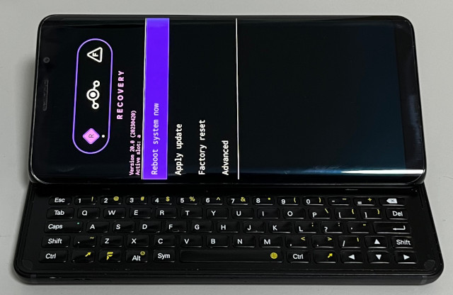
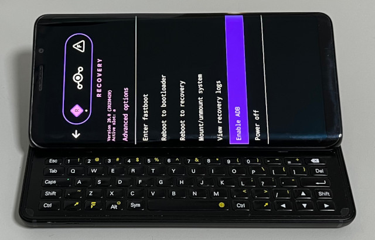

Steward
分享是一種喜悅、更是一種幸福
手機 - F(x)tec Pro1 X - Sailfish OS - 如何備份系統
參考資料：
https://download.lineageos.org/devices/pro1x/builds
https://forum.xda-developers.com/t/official-lineageos-20-for-pro1-x.4543997/
步驟如下：
1. 備份/dev/block/platform/soc/by-name/boot_a、/dev/block/platform/soc/by-name/boot_b
2. 進入fastboot模式並且連接到PC
$ cd $ wget https://mirrorbits.lineageos.org/full/pro1x/20230420/recovery.img $ fastboot flash recovery recovery.img
3. 進入recovery模式(先進入fastboot模式，再透過選單進入recovery模式)

4. Advanced => Enable ADB

5. 透過ADB備份
$ adb pull /dev/block/sda sda.img
/dev/block/sda: 1 file pulled. 36.9 MB/s (251331084288 bytes in 6496.737s)
$ adb pull /dev/block/sdb sdb.img
/dev/block/sdb: 1 file pulled. 35.9 MB/s (8388608 bytes in 0.223s)
$ adb pull /dev/block/sdc sdc.img
/dev/block/sdc: 1 file pulled. 35.0 MB/s (8388608 bytes in 0.229s)
$ adb pull /dev/block/sdd sdd.img
/dev/block/sdd: 1 file pulled. 36.6 MB/s (134217728 bytes in 3.494s)
$ adb pull /dev/block/sde sde.img
/dev/block/sde: 1 file pulled. 36.8 MB/s (4294967296 bytes in 111.389s)
$ adb pull /dev/block/sdf sdf.img
/dev/block/sdf: 1 file pulled. 37.1 MB/s (134217728 bytes in 3.452s)
6. 進入fastboot模式並且回復boot_a、boot_b
$ fastboot flash boot_a xxx $ fastboot flash boot_b xxx